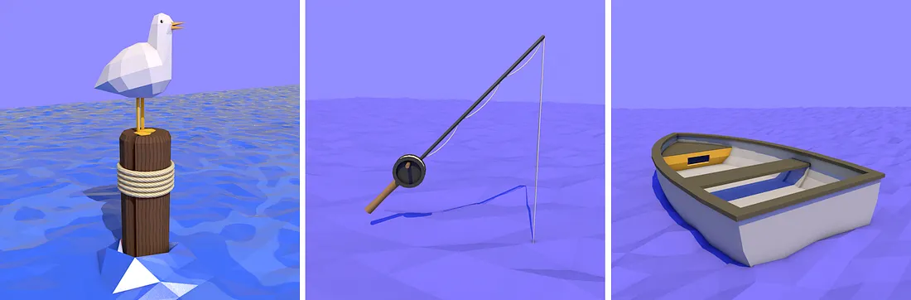
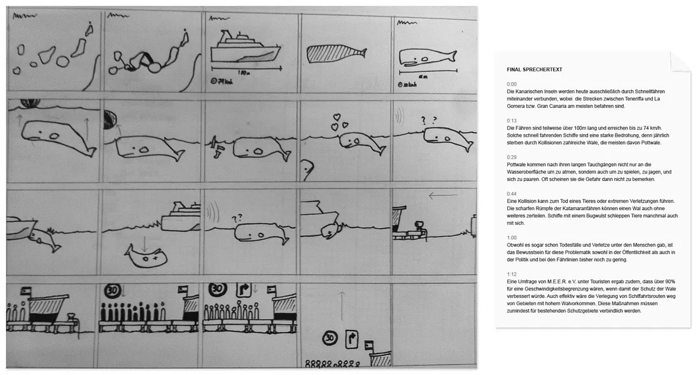
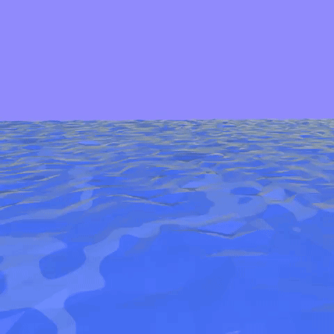

In early 2015, the the Berlin-based cetacean protection organisation M.E.E.R. e.V. got in contact with the Hochschule Anhalt, where I was studying at the time, to co-produce a video highlighting the risks posed by increased tourism to the Canary Islands. As the film students flew to the islands for an early spring vacation, I stayed behind to work on an animation to highlight what the videographers couldn’t directly capture: the dangers fast ferries pose to whales and dolphins.

M.E.E.R. e.V.’s director, marine biologist Fabian Ritter, met with our team regularly throughout the project. For the animation, he provided a general overview of topics to cover, but left stylistic decisions open-ended. Instead, the larger constraint was time. I quickly decided to keep things low-poly, both to cut down on modelling and render times, and because I was already familiar with the style.

I created the storyboard and the voiceover script based on further research into the situation in the Canary islands, where an ever-increasing amount of tourists means not only more inter-island ferries, but also faster ferries which take the mammals by surprise and cause even more damage. At this stage, Fabian’s feedback on the tone and direction was invaluable.

Looking back at my moodboard for inspiration, I decided upon a stark blue and white colour scheme for all but a few focal points of the animation, such as the islands, the whale, and negative elements highlighted in red. This kept elements consistent and helped the animation to stand out among the filmed scenes in the final video.
• • •
I’m glad I was able to work on a project like this during my studies in Germany. In fact, this was one of many projects I completed in Dessau that really opened my eyes to how (at least the design departments of) universities in Europe function differently than those in the US. Despite the delay in release, it felt good to know that we as students could work alongside a worthy organisation to create a real solution addressing a real problem for these threatened animals.
END TRANSMISSION